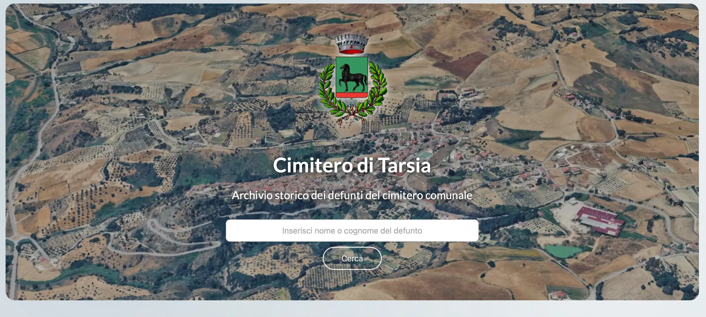

Una presenza semplice
Una pagina unica per presentare un'attività, un professionista, un servizio o un progetto. Tutto quello che serve, in un unico posto.
Progetti web e digitali per professionisti, piccole attività e realtà che vogliono costruire o migliorare la propria presenza online.
Scopri i progetti
Forse sì.
Ma non necessariamente quello che stai immaginando.
Per qualcuno è sufficiente una pagina chiara con servizi, contatti e informazioni essenziali.
Per altri serve un sito più completo, un sistema di prenotazione o un e-commerce.
Il punto non è avere un sito. È capire cosa deve fare per la tua attività.
Una pagina unica per presentare un'attività, un professionista, un servizio o un progetto. Tutto quello che serve, in un unico posto.
Più pagine per raccontare chi sei, cosa fai, i tuoi servizi, i tuoi progetti e come contattarti. Una struttura che può crescere insieme alla tua attività.
Se vuoi vendere prodotti online, possiamo valutare una soluzione e-commerce adatta al modo in cui lavori.
Un sito può diventare anche il punto di partenza per raccogliere richieste e appuntamenti. La soluzione dipende dal tipo di attività e da come vuoi gestire le prenotazioni.
Non esiste una piattaforma giusta per tutti.
Una soluzione flessibile per siti che hanno bisogno di contenuti, pagine e possibilità di gestione nel tempo.
Pensato soprattutto per chi vuole vendere online e avere una piattaforma e-commerce strutturata e gestibile.
Quando il progetto ha esigenze specifiche e una soluzione standard non è sufficiente.
Partiamo da quello che ti serve, non dalla piattaforma.
Un sito ben fatto è un punto di partenza, non necessariamente il punto di arrivo.
Non serve fare tutto subito. Si può partire da ciò che serve davvero e aggiungere il resto nel tempo.
Il sito è una parte del progetto.
Un sito può essere curato, veloce e funzionare perfettamente. Ma se le informazioni non sono aggiornate, se Google non riesce a leggerlo bene o se sui social comunichi qualcosa di completamente diverso, la tua presenza online perde coerenza.
Per questo considero insieme:
Non devono essere identici.
Devono però raccontare la stessa attività.
Realizzo il sito, lo pubblico e ti lascio una soluzione che puoi continuare a gestire autonomamente, quando possibile. Ti aiuto a partire nel modo giusto e poi puoi proseguire per conto tuo.
Aggiornamenti, modifiche, nuovi contenuti o piccoli interventi: in base a ciò che ti serve.
Il progetto può finire con la pubblicazione oppure continuare nel tempo.

WEB APP · BACKEND · DATABASEDipende dalla complessità del progetto e dal materiale da preparare. Un sito semplice può essere pronto in tempi relativamente brevi, mentre un progetto più articolato richiede più tempo e organizzazione.
No. Posso aiutarti a scegliere e acquistare il dominio, individuare la soluzione più adatta e occuparmi della configurazione necessaria per mettere il sito online.
I social e il sito hanno funzioni diverse. Il sito può diventare il punto di riferimento della tua attività, dove raccogliere informazioni, servizi, contatti e tutto ciò che vuoi far trovare a chi ti cerca online.
Sì, se scegliamo una soluzione pensata anche per questo. Posso lasciarti il progetto pronto da gestire in autonomia oppure continuare a occuparmi degli aggiornamenti e degli interventi di cui hai bisogno.
Sì. Posso aiutarti a configurare gli strumenti necessari per rendere più completa la tua presenza online, come Google Business Profile, Google Analytics e Search Console, oltre agli aspetti di base della SEO. L'obiettivo è fare in modo che il sito non rimanga semplicemente online, ma sia inserito nel modo giusto nel resto della tua presenza digitale.
Mi occupo di progetti web e digitali, ma non penso che il digitale inizi dal sito.
Prima viene capire cosa vuoi raccontare, a chi vuoi parlare e come vuoi presentarti online.
Il sito, l’e-commerce, la SEO, Google, i contenuti e gli strumenti di analisi sono parte di questo percorso.
Mi piace lavorare soprattutto con professionisti e piccole attività che hanno qualcosa da raccontare, ma magari non sanno da dove partire o pensano che per costruire una presenza online servano grandi budget e grandi strutture.
Il mio lavoro è dare forma a tutto questo: trovare il modo giusto per comunicare un'attività, scegliere gli strumenti che servono davvero e costruire una presenza online che sia bella, chiara e soprattutto gestibile.
Il mio percorso professionale arriva anche da un altro mondo: da anni lavoro nell’amministrazione del personale e nel payroll.
È un'esperienza che mi ha insegnato precisione, organizzazione e attenzione ai dettagli, ma soprattutto a cercare soluzioni quando qualcosa non funziona come dovrebbe.
Nel digitale ho trovato il modo di unire questa parte più concreta alla creatività e alla progettazione.
Hai bisogno di un sito, vuoi vendere online o vuoi migliorare quello che hai già?
Dimmi cosa hai in mente e vediamo insieme quale soluzione può essere più adatta.